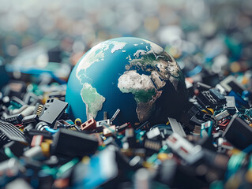
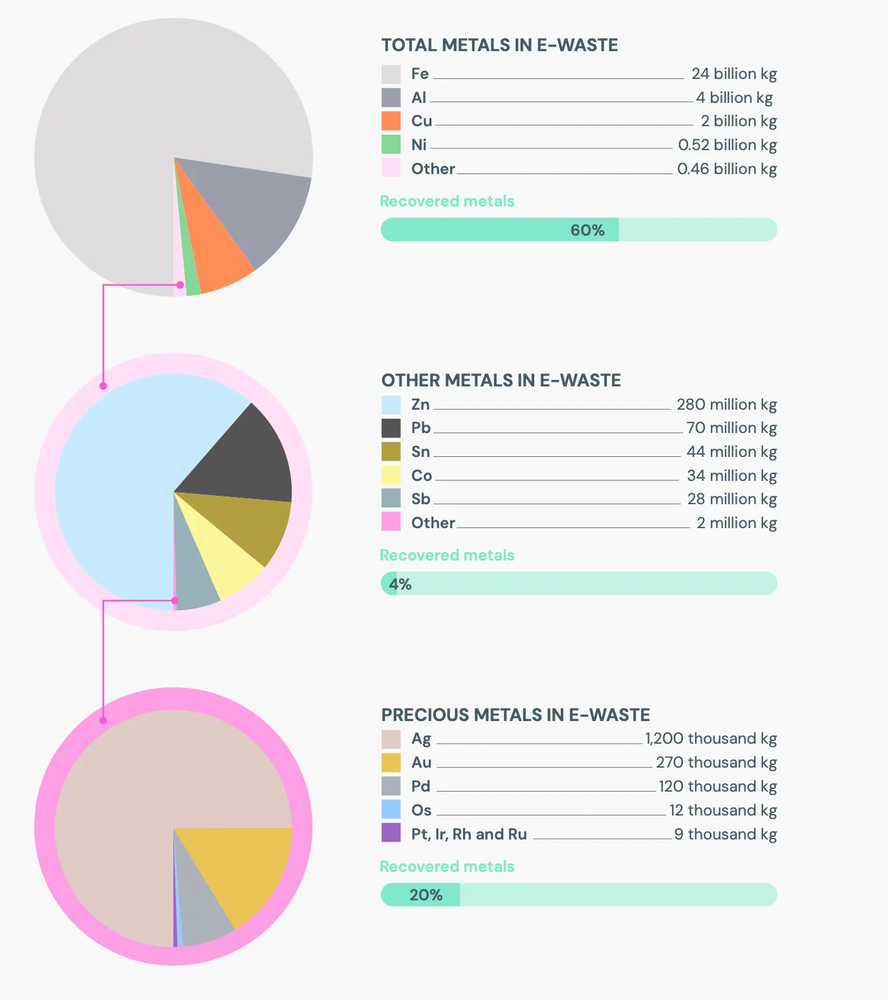

E-waste, or electronic waste, refers to discarded electronic devices and equipment. It encompasses a broad range of items, from smartphones and laptops to televisions, household appliances, and even batteries. As technology advances rapidly, the lifespan of electronic products has decreased, prompting frequent upgrades and replacements. This trend has led to a surge in e-waste globally, which has significant environmental, health, and economic implications.
Understanding the Scale of E-Waste

In recent years, the volume of e-waste has grown at an alarming rate. According to the Global E-waste Monitor, approximately 53.6 million metric tons of e-waste were generated worldwide in 2019, and this figure is projected to reach 74.7 million tons by 2030. This increase is partly due to rising disposable incomes, the proliferation of affordable electronics, and a culture that prioritizes new and trendy devices. As a result, e-waste is now the fastest-growing waste stream worldwide, outpacing other forms of waste.
However, only a small percentage of e-waste is properly recycled or managed. In 2019, just 17.4% of global e-waste was officially documented and managed through formal recycling processes. The remaining 82.6% was either improperly disposed of in landfills, incinerated, or managed in informal sectors, especially in developing countries with weak regulatory frameworks.
The Problem with E-Waste
E-Waste Composition and Toxicity
E-waste contains valuable materials such as gold, silver, copper, and rare earth metals, which can be recovered through recycling. However, it also contains hazardous substances, including lead, mercury, cadmium, chromium, and flame retardants, which are harmful to both humans and the environment. When improperly handled or disposed of, these toxic elements can leach into soil and water, causing contamination that may persist for decades. In addition to the chemicals, certain components in e-waste are particularly challenging to recycle. For instance, lithium-ion batteries, widely used in smartphones and laptops, are prone to catching fire if not handled correctly. Meanwhile, the recycling process itself can be labor-intensive, requiring specialized knowledge and equipment to safely extract valuable materials without releasing toxins.
Disadvantages
- Environmental pollution
- Health risks from toxic materials
- Economic waste of resources
- Soil and Water Contamination
- Energy Consumption and Carbon Footprint
The disposal of e-waste in landfills or incineration releases hazardous chemicals into the environment. These toxins can seep into the soil and groundwater, contaminating water supplies and harming ecosystems. Air pollution also arises when e-waste is burned, releasing harmful dioxins and other compounds.
The informal recycling sector, particularly in developing nations, often employs unregulated and unsafe methods to extract valuable materials from e-waste. Workers, sometimes including children, may be exposed to toxic substances without proper protective equipment, leading to serious health problems. Prolonged exposure can cause respiratory problems, neurological damage, and even cancers
E-waste contains valuable resources that could be recovered and reused. However, improper disposal and lack of recycling lead to a waste of these resources, increasing the demand for mining and extraction of new raw materials. This not only incurs economic costs but also depletes limited natural resources, contributing to environmental degradation.
Toxic materials like lead and cadmium leach into the soil when e-waste is improperly discarded. This contamination affects agricultural productivity, and when it reaches water bodies, it disrupts aquatic ecosystems, affecting fish and plant life, and ultimately posing risks to human health.
The production of electronic devices requires significant energy and resources. When these devices are discarded rather than recycled, the energy and resources invested in their manufacture go to waste, contributing to a larger carbon footprint. Recycling, by contrast, reduces the need for raw material extraction and energy-intensive manufacturing processes.
Reducing E-Waste
Reducing and stopping e-waste requires coordinated efforts from individuals, companies, and governments. It involves adopting sustainable practices at all stages of the product lifecycle, from manufacturing and purchasing to disposal. Here are key strategies that can help reduce and eventually stop e-waste:
Promote Sustainable Product Design
- Modular and Repairable Designs
- Environmentally Friendly Materials
- Reduce Planned Obsolescence
Manufacturers should prioritize designs that are easy to repair and upgrade, extending the lifespan of devices. For example, using standardized parts and modular designs allows consumers to replace or upgrade parts rather than the entire device.
Using recyclable and non-toxic materials can make it easier to safely recycle or dispose of products at the end of their life.
Companies should be discouraged from intentionally designing products with short lifespans or rapid obsolescence, which encourages consumers to replace devices more frequently.
Implement Extended Producer Responsibility (EPR) Policies
- Manufacturer Accountability
- Financial Incentives
Governments can enforce EPR policies, which make manufacturers responsible for the entire lifecycle of their products, including post-consumer disposal. This can encourage companies to establish recycling programs, take back old devices, and reduce waste generation.
By offering tax breaks or subsidies to companies that actively recycle and reduce e-waste, governments can incentivize more responsible production and waste management practices.
Increase Access to Recycling Programs
- Establish Convenient E-Waste Collection Points
- Educate and Incentivize Recycling
Local governments and businesses can set up accessible drop-off points in communities where people can easily recycle their old electronics.
Public awareness campaigns can inform consumers about where to recycle their electronics. Incentives, like discounts on new purchases when old devices are returned, can motivate consumers to recycle.
Encourage a Circular Economy
- Reuse and Refurbish
- Resource Recovery
- Repair and Resale Markets
Encouraging the purchase of refurbished devices and the reuse of existing electronics can extend the life of products and reduce e-waste.
Efficiently extracting valuable materials (like gold and copper) from e-waste reduces the need for raw material extraction, conserving natural resources.
Support for repair and resale businesses can encourage people to fix devices rather than replace them, promoting a culture of reuse and repair over disposal.
Adopt Conscious Consumer Habits
- Buy Only What’s Needed
- Choose Recyclable Products
- Proper Disposal
Consumers can help reduce e-waste by buying only what they need, avoiding frequent upgrades, and prioritizing devices designed to last.
Selecting products made from sustainable, recyclable materials can minimize waste at the end of a device’s life.
Individuals can ensure that their old electronics are disposed of responsibly by using certified recycling facilities rather than throwing devices in the trash.
Raise Public Awareness on E-Waste
- Educational Campaigns
- Corporate Social Responsibility (CSR) Programs
Schools, community centers, and media outlets can help inform the public about the environmental impact of e-waste and the importance of responsible disposal.
Companies can engage in public awareness campaigns or offer educational resources on e-waste, demonstrating their commitment to sustainable practices.
Leverage Technology for Better E-Waste Management
- Smart Sorting and Recycling Technologies
- E-Waste Tracking Systems
Using AI and robotics, recycling centers can improve their efficiency in sorting and extracting valuable materials from e-waste.
Tracking e-waste with barcodes or IoT technology can help prevent illegal dumping and ensure proper recycling processes.
International Collaboration and Regulation
- Global Standards for E-Waste Management
- Ban on Hazardous Waste Exports
Countries can collaborate to establish and follow standardized regulations on e-waste, helping to prevent the export of hazardous waste to developing nations and ensuring consistent recycling practices.
Enforcing stricter bans on exporting e-waste to countries that lack proper facilities for handling it can prevent dangerous recycling practices and environmental pollution.
By taking these steps, we can significantly reduce the amount of e-waste generated, protect the environment, conserve resources, and promote healthier communities. Moving toward a sustainable, circular economy—where products are reused, repaired, and recycled—will play a central role in stopping e-waste in the long term.
E-Waste Collection Centers
Click on view larger map and then in search option type "E-waste centres near me"
A list of known e-waste collection centres in India
1. Government Initiatives
- Swachh Bharat Mission E-Waste Collection Centers: Many urban local bodies (ULBs) across cities have set up e-waste collection centers under the Swachh Bharat Mission.
- CPCB (Central Pollution Control Board) Registered Centers: CPCB maintains a list of authorized e-waste recyclers and collection points across India. Visit the CPCB website for up-to-date information.
2. E-Waste Collection Centers by State and City
Delhi NCR
- Attero Recycling: A well-known e-waste recycler with multiple collection centers across Delhi NCR. Website
- Ecoreco: Provides e-waste collection points and bins across the Delhi NCR region. Website
Mumbai, Maharashtra
- EcoFriend Industries: Authorized e-waste collection center in Mumbai.
- EcoCentric Management Pvt Ltd: Offers collection and recycling services across Maharashtra. Website
- Cerebra Integrated Technologies Ltd: Collects and recycles e-waste in Mumbai and other cities. Website
Bengaluru, Karnataka
- Saahas Zero Waste: This NGO operates collection points and bins across Bengaluru. Website
- E-Parisaraa Pvt Ltd: One of India’s first e-waste recyclers with a collection center in Bengaluru. Website
Hyderabad, Telangana
- Ramky Enviro Engineers Ltd: Operates collection and recycling services in Hyderabad. Website
- Hyderabad E-Waste Collection Centers: Various government-authorized centers set up in collaboration with GHMC.
Chennai, Tamil Nadu
- Virogreen India Pvt Ltd: Provides e-waste collection and recycling services in Chennai. Website
- Karo Sambhav: Collaborates with several organizations and offers collection services in Tamil Nadu. Website
Kolkata, West Bengal
- Hulladek Recycling: Operates e-waste collection centers in Kolkata and nearby regions. Website
- Greentek Reman Pvt Ltd: Provides collection and recycling services across West Bengal. Website
Pune, Maharashtra
- SWaCH Pune: Works with the Pune Municipal Corporation to provide e-waste collection points and recycling services. Website
- E-WaRR (E-Waste Resource Recovery): A Pune-based initiative for e-waste collection and recycling. Website
3. Manufacturer Take-Back Programs
- Many electronic brands, such as Dell, HP, Lenovo, Apple, and Samsung, have e-waste take-back programs in India. You can contact the brand’s customer service or visit their official websites to locate the nearest authorized collection point.
E-Waste Calculator
Calculate your e-waste footprint:
For a more comphrensive calculation of your e-waste footprint, visit WEE4FUTURE
Corporate and Government Initiatives
Learn about efforts in India to manage e-waste by visiting this page